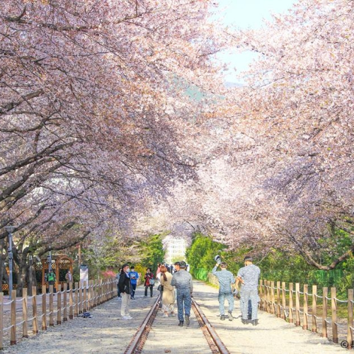
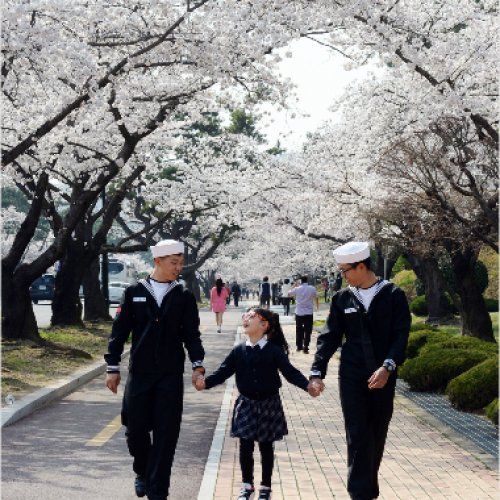
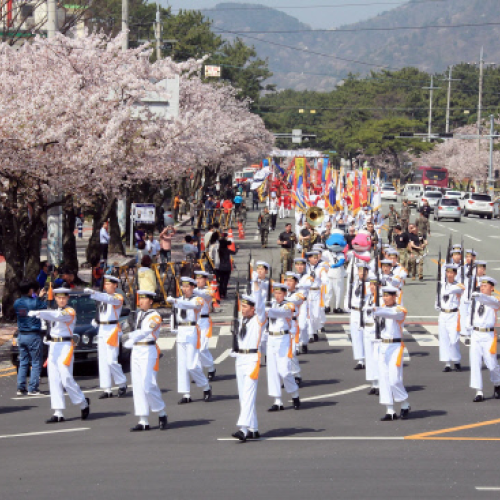

진해군항제 소개

다채로운 행사와 문화체험
벚꽃도 보GO! 즐거움도 얻GO!



초창기에는 이충무공 동상이 있는 북원로터리에서 제를 지내는 것이 전부였으나, 1963년부터 진해군항제로 축제를 개최하기 시작하여 충무공의 숭고한 구국의 얼을 추모하고 향토문화예술을 진흥하는 본래의 취지를 살린 행사와 더불어 문화예술행사, 세계군악의장페스티벌, 팔도풍물시장 등을 아름다운 벚꽃과 함께 즐길 수 있는 봄 축제로 해마다 알찬 발전을 거듭하여 이제는 군항제 기간 동안 200만명 이상의 국내외 관광객이 찾는 오랜 역사와 전통을 자랑하는 전국 규모의 축제로서 자리를 확고히 하고 있다.
벚꽃놀이 중 최고인 진해군항제가 개최되는 춘삼월은 우리나라 상춘객들을 잔잔한 바다를 품은 군항도시로 모여들게 한다. 36만그루 왕벚나무의 새하얀 꽃송이들이 일제히 꽃망울을 터뜨리면 세계최대 벚꽃도시에서 봄날의 추억을 남기려 포토홀릭에 빠지는 사람들과 꽃비가 흩날리는 봄의 향연에 취한 사람들이 한데 어우러져 출렁이는 모습은 축제의 장관을 이룬다.
진해군항제 행사는 이충무공 얼을 추모하는 행사와 벚꽃명소 테마행사로 중원로터리에서 전야제, 팔도풍물시장, 예술문화공연 등 주요 행사가 열리고 북원로터리에서는 이충무공 동상에 헌다헌화, 추모대제, 승전행차 퍼레이드가 열린다. 또한, 군항도시의 특성을 살린 군악의장페스티벌은 축제기간 중 금요일 저녁과 주말에 개최 되는데 군악ㆍ의장이 융합된 군대예술 공연으로 군악대의 힘찬 마칭공연과 의장대의 멋있는 제복에 절도 있는 공연은 진해군항제 벚꽃축제 에서만 볼 수 있는 공연이다.
평소 출입이 자유롭지 않은 해군사관학교, 해군진해기지사령부는 군항제 기간에 꼭 들러야 할 곳으로 해군사관학교 박물관 및 거북선 관람, 함정 공개, 사진전, 해군복 입기, 요트크루즈 승선 등 다양한 체험행사 할 수 있으며, 우리나라 해군기지 면모와 함께 100년이 넘는 왕벚나무의 화려한 벚꽃 자태를 만끽할 수 있다.
진해군항제에서 알려진 벚꽃명소로 내수면 생태공원, 여좌천, 경화역, 진해탑, 진해루 등으로 꼭 탐방할 곳 인데, 제황산 모노레일을 타고 진해탑 옥상에서 시가지를 내려다 보면 동서로 길게 뻗은 지형에 위로는 병풍같은 산과 아래로는 잔잔한 바다가 놓여 있다. 중원로터리 팔거리를 중심으로 근대와 현대가 함께 존재하는 100년이 된 건물들과 36만그루 벚꽃들이 함께 어우러져 아담하고 평온한 도시를 한눈에 담을 수 있다.
진해구는 시가지 중심에 3개의 로터리가 있는데 중원, 북원, 남원로터리가 크게 자리잡고 각 로터리를 기점으로 도로가 여덟 개로 퍼져 있다. 중원로터리에 각 골목마다 근대문화 유적이 산재되어 있는데 진해우체국, 선학곰탕집, 흑백다방, 영해루, 뽀족집 등 100년 전의 건물들이 즐비해 있다. 중원로터리 8거리 골목의 시간여행을 하고 가야할 곳은 군항마을역사관으로, 이곳에는 1902년 부터 시작된 군항 개발 및 옛도시 풍경 사진과 함께 스토리텔링을 직접 들을 수 있어서 벚꽃진해가 품은 또 다른 매력에 빠져 들 수 있다.
우리 벚꽃 사랑할래요?
제 62회 진해군항제
흩날리는 벚꽃 잎을 잡으면 소원을 이루어줄게요!
진해마스코트
벚꽃요정
벚꽃 요정이 사랑을 담아 핑크빛 꽃잎을 날려드릴게요!
흩날리는 꽃잎을 잡아 사랑을 이루어보세요!
대한민국 최대의 벚꽃 축제 중 하나로 벚꽃이 만개하는 봄 경상남도 창원시 진해구에서 열리는 진해군항제 축제는 1963년 제 1회 군항제를 시작으로 올해 62회 축제를 시작하게 되었습니다.
진해를 부탁해! 아름다운 진해를 지켜온 위대한 해군
진해마스코트
진해부엉이
부엉산이라 불리우는 제황산 일대 지혜와 부귀를 상징하는 해군 부엉이가 안내하는 진해의 아름다움 속으로 빠지다!
진해는 대한민국 해군의 발상지로 군항제 기간 동안에는 해군 기지 공개 · 해군 함정 관람 · 해군 음악대의 공연 등 다양한 해군 문화를 경험할 수 있는 기회가 제공됩니다!